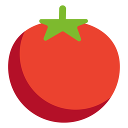
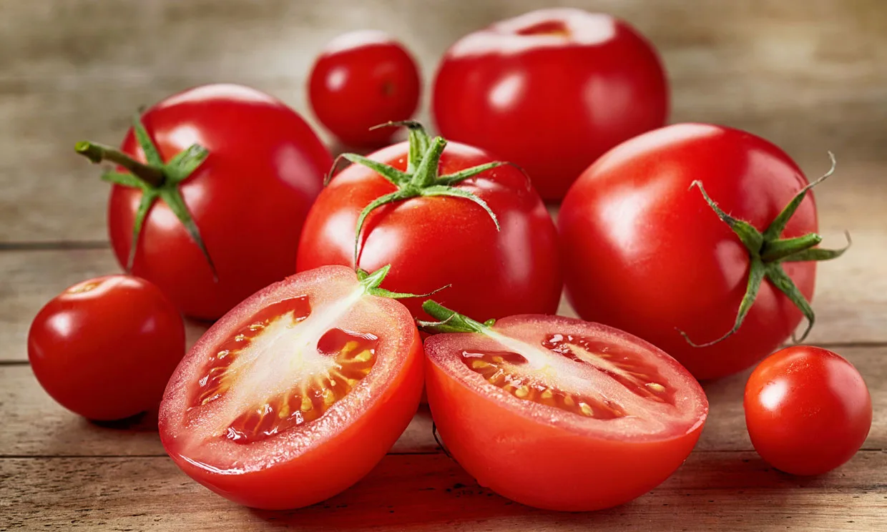

Inicio
Tomate


El tomate es el fruto de la planta Solanum lycopersicum,
el cual tiene importancia culinaria, y es una verdura.
Siendo el tomate clasificado botánicamente como una fruta,
más precisamente como una baya, es comúnmente usado en
arte culinario como un ingrediente vegetal o también
como guarnición.